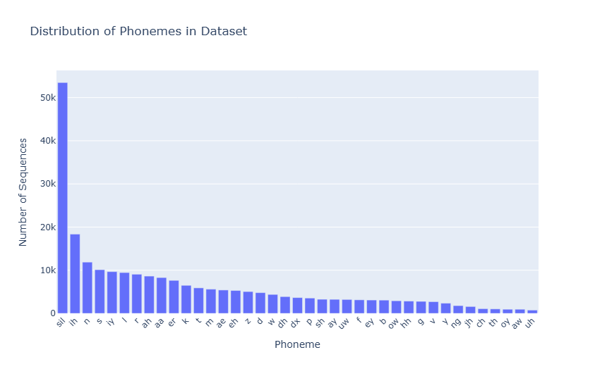
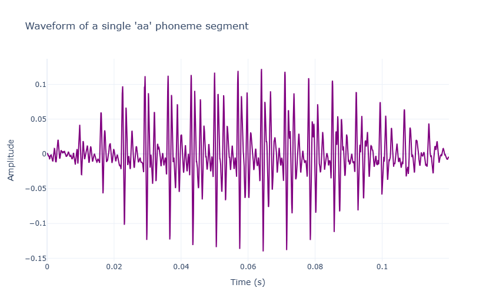
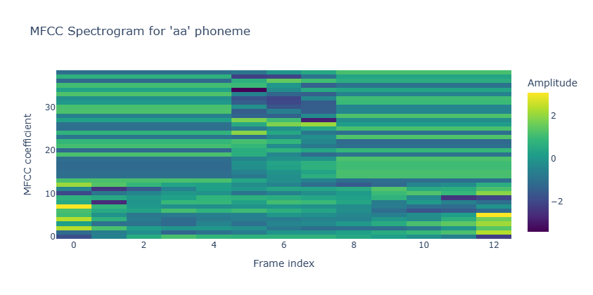
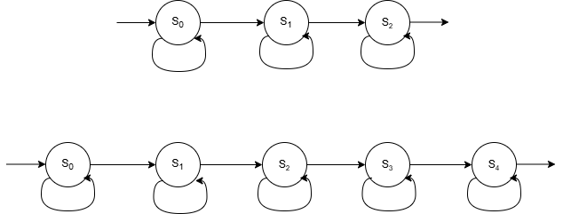
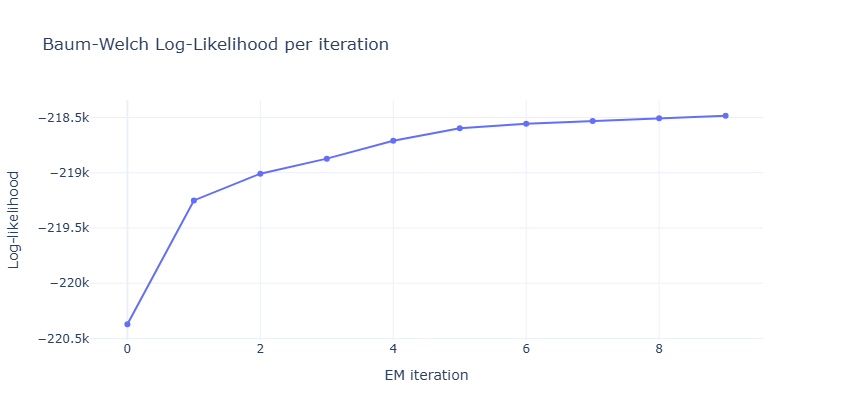
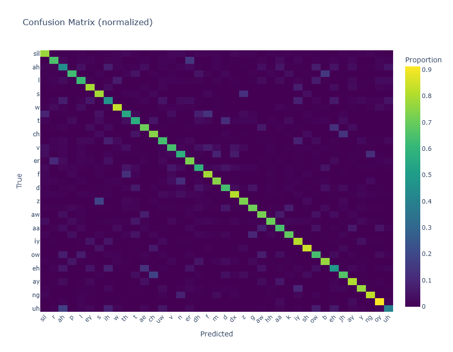
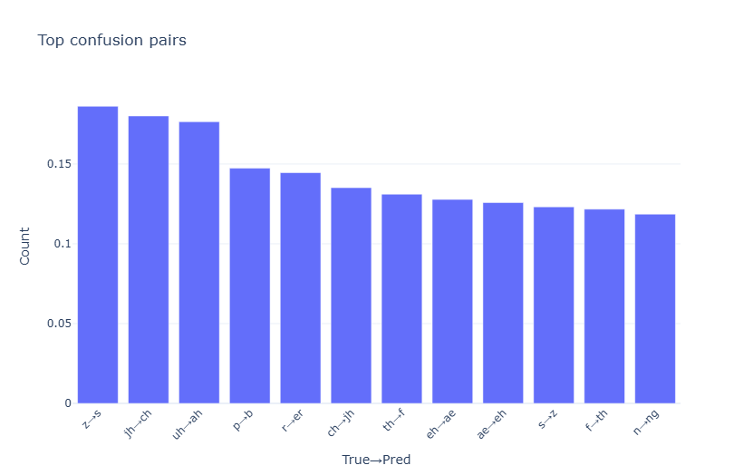

1. Exploratory Data Analysis
Dataset Overview
TIMIT contains phonetically-balanced speech from 630 speakers across 8 dialect regions. Each utterance includes time-aligned phonetic and word transcriptions.
- 630 speakers x 10 utterances
- 61 phoneme labels (optionally reduced to 39)
- High-quality 16 kHz recordings
Phoneme Frequency Distribution
Significant class imbalance is observed: sil, ih, n dominate the dataset. This motivates balancing strategies in HMM training.

2. Acoustic Feature Extraction
Raw Audio Waveform
We start with the raw audio signal sampled at 16 kHz.

MFCC + Δ + ΔΔ (39-dimensional)
We extract cepstral features capturing spectral properties and temporal dynamics.
- 13 static MFCCs (vocal tract shape)
- 13 delta coefficients (velocity)
- 13 delta-delta coefficients (acceleration)
Normalization: Cepstral Mean & Variance Normalization (CMVN).

3. Modeling Approach
HMM state diagram
Each HMM is modelled with 3 states for each phoneme:
- Left-to-right transitions only due to the sequential nature of speech.
- Each state can only move to itself or the next state.
- However, /sil/ phoneme is modelled with 5 states to capture its longer duration.

Gaussian HMM
Each HMM state is modeled with a single diagonal Gaussian. Simple and efficient, but struggles with multi-modal phoneme distributions.
GMM-HMM
Each state uses a mixture of Gaussians (e.g., 8 mixtures). Better models complex acoustic patterns and achieves highest accuracy.
4. Training Results
EM Convergence Curve
Baum-Welch expectation-maximization increases log-likelihood monotonically.

Confusion Matrix
Most confusions occur between phonetically similar pairs (e.g., /z/->/s/, /jh/->/ch/, /uh/->/ah/).

Performance Summary
| Model | States | Mixtures/Symbols | Accuracy | F1 (Weighted) |
|---|---|---|---|---|
| Gaussian HMM | 3 | - | 59.66% | 0.61 |
| GMM-HMM | 3 | 8 mixtures | 68.53% | 0.70 |
5. Error Analysis
Most Confused Phoneme Pairs
We analyze where the model struggles to distinguish acoustically similar categories.
- /s/ vs /z/ — voicing ambiguity in noisy segments.
- /p/ vs /b/ — weak burst for unvoiced stops.
- /ae/ vs /eh/ — vowel height confusion.

6. Conclusion & Future Work
Key Findings
- GMM-HMM significantly outperforms Gaussian HMM.
- MFCC + Δ + ΔΔ provides the best acoustic representation.
- Phoneme imbalance heavily affects baseline performance.
Future Enhancements
- DNN-HMM hybrid acoustic model
- LDA/MLLT feature transforms
- Full phoneme-loop decoder with bigram transitions
- End-to-end CTC comparison